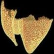

|
Reaearch Scientist kenshi84 [at] gmail.com Address: Shibuya Scramble Square 22F, 2-24-12 Shibuya, Shibuya-ku, Tokyo 150-6121 |
リサーチサイエンティスト kenshi84 [at] gmail.com 住所: 〒150-6121 東京都渋谷区渋谷2丁目24番12号 渋谷スクランブルスクエア22F |
I'm a research scientist at CyberAgent AI Lab. My general research interest lies in geometric modeling and user interface design for computer graphics. Previously, I did my Bachelor (2007), Master (2009), and PhD (2012) under the supervision of Prof. Takeo Igarashi at the University of Tokyo, then I did my postdoctoral research under the supervision of Prof. Olga Sorkine-Hornung at ETH Zurich, Switzerland, then I worked as an assistant professor at National Institute of Informatics (NII) since September 2014.
私は2022年4月より、株式会社サイバーエージェントAI事業本部AI Labにて、リサーチサイエンティストとして研究開発に従事しています。 主な研究対象は、コンピュータグラフィクス分野における形状モデリングとそのためのユーザインタフェース設計に関するトピックです。 現職に就く前は、東京大学において五十嵐健夫教授の指導のもとで学士課程(2007)、修士課程(2009)、博士課程(2012)を修了し、 その後スイスのETHチューリッヒにて博士研究員としてOlga Sorkine-Hornung教授の指導のもとで研究を行い、 その後2014年9月より国立情報学研究所にて助教として勤務していました。
Refinement of Hair Geometry by Strand Integration |
Compatible Intrinsic TriangulationsVC + VCC 2022 (招待講演)
|
Dual Sheet Meshing: An Interactive Approach to Robust Hexahedralization |
Data-Driven Interactive Quadrangulation |
Pattern-Based Quadrangulation for N-Sided Patches |
A Simple Method for Correcting Facet Orientations in Polygon Meshes Based on Ray Casting(presented at I3D 2015)
|
Consistently Orienting Facets in Polygon Meshes by Minimizing the Dirichlet Energy of Generalized Winding NumbersTechnical report, ETH Zurich (2014)
|
Sketch-Based Generation and Editing of Quad Meshesスケッチインタフェースによる四角形メッシュの生成と編集 |
Real-Time Example-Based Elastic Deformation例示ベース弾性変形の実時間計算手法 |
GeoBrush: Interactive Mesh Geometry Cloning |
Designing Custommade Metallophone with Concurrent Eigenanalysis実時間固有値解析による自由形状を持つ鉄琴のデザイン |
Volumetric Modeling with Diffusion Surfaces |
ProcDef: Local-to-global Deformation for Skeleton-free Character AnimationProcDef: 柔軟な物体の能動的な動作の表現手法 |
Layered Solid Texture Synthesis from a Single 2D Exemplar
SIGGRAPH North America 2009 Posters
ACM Student Research Competition Finalist
|
A Sketch-based Interface for Modeling Myocardial Fiber Orientation that Considers the Layered Structure of the Ventricles |
|  |
A Procedural Method for Modeling the Purkinje Fibers of the Heart |
Lapped Solid Textures: Filling a Model with Anisotropic Textures異方性ソリッドテクスチャを用いた中身を持つ3次元物体のモデリング |
Light Shower: A Poor Man's Light Stage Built with an Off-the-shelf Umbrella and Projectorライトシャワー：傘とプロジェクタで作る安価な照明装置
エンタテインメントコンピューティング 2007
ベストプレゼンテーション賞
|
A Sketch-Based Interface for Modeling Myocardial Fiber Orientation心筋線維走向モデリングのためのスケッチインタフェース |
多点入力デバイスを用いたアニメーション作成システム |
{kind=link}